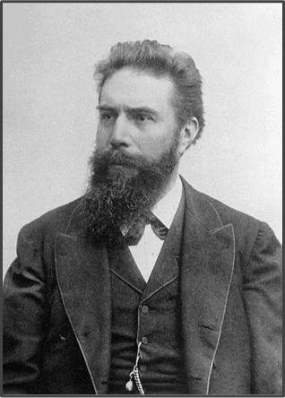
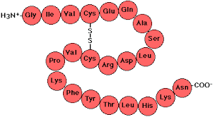

CrystalMetrics
THE SCIENCE OF ATOMIC MAPPING
History of Atomic Vision
Before 1895, the internal world of matter was completely invisible. Scientists could only guess how atoms were arranged until a series of breakthroughs changed everything.
Wilhelm Röntgen: The Accident
Röntgen discovered X-Rays while testing cathode rays in a dark lab.
- He noticed a screen glowing far away, proving a new "invisible light" existed.
- Key Fact: He called them "X" because the rays were an unknown variable.
- Winner of the first Nobel Prize in Physics (1901).

The Hand of Bertha (1895)
The first clinical X-ray image in history, showing his wife's hand.
- Exposure: It took 15 minutes of radiation to get this single image.
- Notice the ring: Metal blocks X-rays better than bone or flesh.
- Bertha's reaction: "I have seen my death!"

Max von Laue's Proof
Von Laue proved that crystals were Geometric Lattices acting as a diffraction grating.
- This proved two things: X-rays are waves (like light) and crystals have a repetitive atomic structure.
- Without this proof, we wouldn't know that atoms are ordered in "grids".
The Bragg Legacy
Father and son (William & Lawrence Bragg) created the link between Angles and Distance.
- They simplified the complex math of Von Laue.
- Lawrence was only 25 when he won the Nobel Prize (the youngest for decades).

Core Scientific Pillars
Crystallography bridges Physics, Biology, and Chemistry through structural analysis.
Decoding DNA
Rosalind Franklin's Photo 51: The mathematical proof of the Double Helix.
- The "X" shape in the photo is the signature of a spiral (helix) structure.
- Without this X-ray, the structure of life would have remained a mystery.
- Presenter Tip: This photo was taken in 1952 using a sample of pure DNA.

Polymorphism
Diamond vs Graphite: Same atoms, different geometric arrangement.
- In Diamond: Carbon forms a 3D pyramid (Ultra-strong).
- In Graphite: Carbon forms flat sheets (Slips easily, used in pencils).
- X-rays tell us *how* they are connected, explaining why one is hard and the other soft.

Interference
Detecting Constructive Interference peaks within the crystal lattice.
- Think of it like waves in the ocean: When two waves hit and grow larger, that's "Constructive".
- The X-ray detector only records these "big waves" (diffraction spots).
- If the waves cancel out, we see nothing (Destructive Interference).
The Mathematical Engine
Mathematics transforms diffraction data into tangible molecular coordinates. Without these formulas, the world of atoms remains invisible.
1. The Signal Finder (Bragg's Law)
What it does: Determines the specific angles where X-rays "bounce" in sync.
- Identifies Constructive Interference.
- The "d" is the distance between atomic planes—our main goal.
- λ (Lambda) is the wavelength of our X-ray source.
2. The Spatial Map (Miller Indices)
What it does: Calculates the exact distance between layers of atoms.
- Uses h, k, l (coordinates) to map 3D orientation.
- "a" is the size of the Unit Cell (the basic repeating box of the crystal).
- This tells us how "tightly packed" the atoms are.
3. Geometric Correction (Trig Laws)
Sine Law
Used for Triangulation. If the crystal isn't a perfect cube, this calculates missing lengths using known angles from the detector.
Cosine Law
Calculates Absolute Distance in non-90° lattices. It's the "GPS" for atoms in complex, tilted crystals.
Global Impact
Modern medicine and technology depend on atomic-level analysis. If we can't see it, we can't fix it.
Precision Medicine & Vaccines
Designing chemical "keys" to fit the viral "locks" of proteins.
- Drug Design: Scientists map the 3D shape of a virus protein to find its "weak spot".
- This is how the COVID-19 vaccines and modern cancer drugs were developed.
